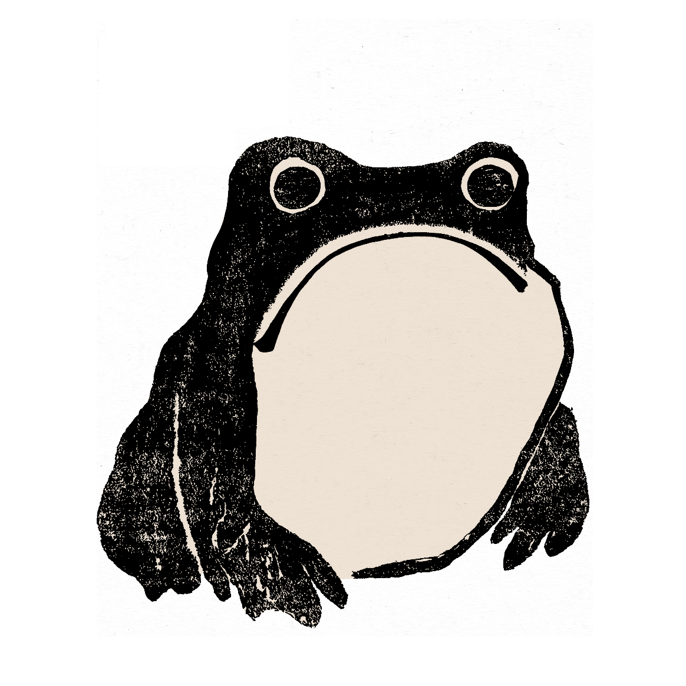

Suminagashi is often translated as "floating ink" in Japanese. It has been used for various crafts including paper, fabrics, metal, and ceramics. Using two brushes with pointy ends, with ink on one tip and water/surfactant solution on the other, they are alternately dipped in the tray filled with water. This creates irregular circles of color and space, which then morph or may be manipulated by blowing or fanning on the subsequent patterns or concentric circles. When ready, paper is then placed carefully on top of the water, peeled off, and the pattern is transferred to the paper. Paper is then left to dry on a rack or flat surface. (Met Museum)
* Please wait until your painting has finished to edit the input number.
* Keep in mind that the machine runs slowly, so fewer loops is better!
With Love 💚 Rebecca Brand & Felicia Liang, PS70 Fall 2022
